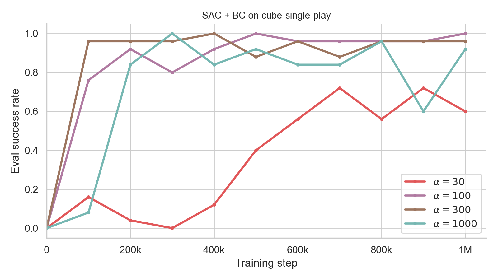
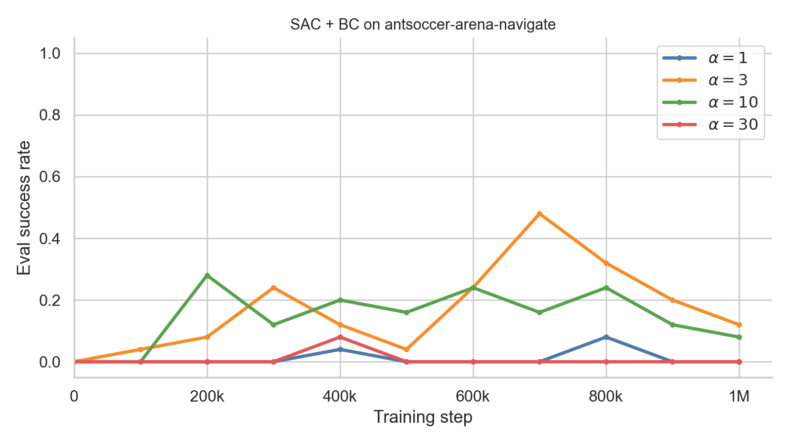
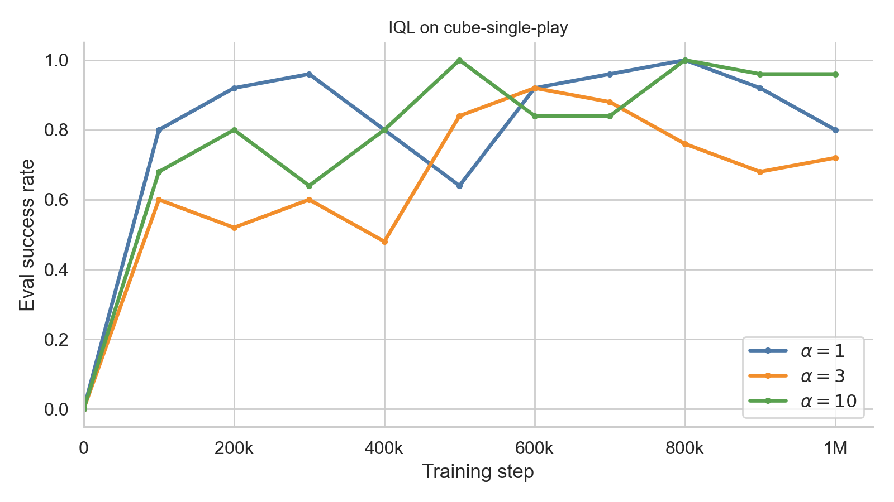
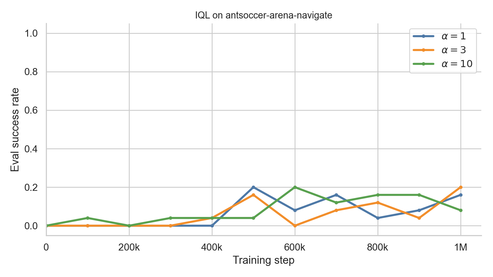
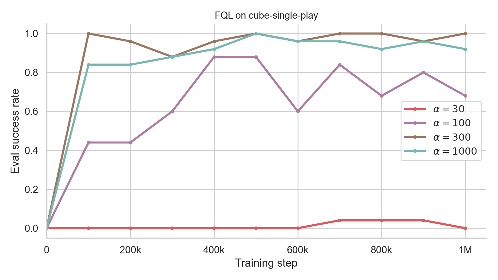
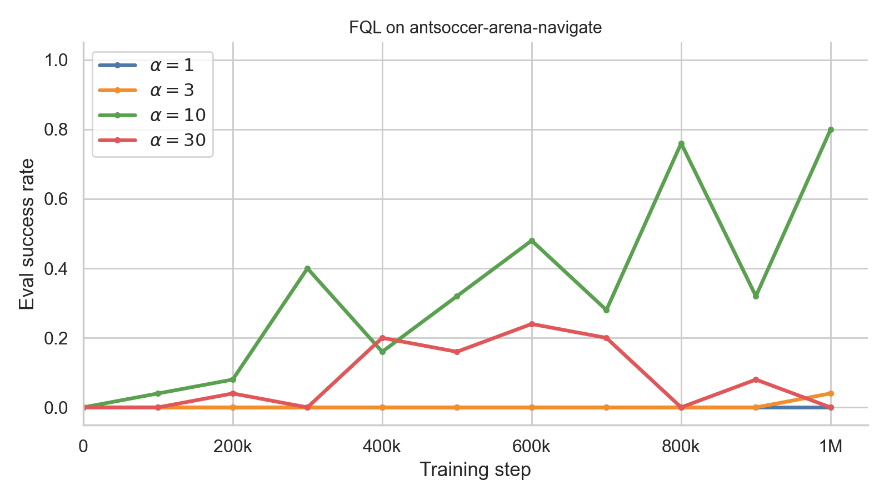

Offline Reinforcement Learning
Overview
In this project, I implemented three offline RL algorithms — SAC + BC, Implicit Q-Learning (IQL), and Flow Q-Learning (FQL) — on continuous-control tasks from OGBench.
Here are some example rollouts from the models I trained:
What is Offline RL?
In offline RL, we are given a static dataset \(\mathcal{D} = \{(s, a, r, s')\}\), and we must learn a policy that maximizes expected return without querying the environment during training. The main challenge with this is the distribution shift: the learned policy can end up visiting states and taking actions that were poorly covered in the dataset, which can cause Q-function overestimation and unstable policy updates.
Behavioral Cloning vs. Offline RL
Although both Behavioral Cloning (Imitation Learning) and Offline RL learn from a fixed dataset of transitions, they are solving different problems. Behavioral Cloning ignores rewards and simply fits \(\pi(a \mid s)\) to a dataset of (\(s, a\)) pairs via supervised learning. It is just imitating the behavior of the dataset. However, Offline RL aims to learn a policy that maximizes expected return from the data, while being careful to stay close to the data distribution.
The three algorithms tackle this problem in different ways:
- SAC + BC adds an explicit behavioral-cloning penalty to a Soft Actor-Critic policy loss to keep the policy close to dataset actions.
- IQL uses expectile regression to estimate a value function without querying out-of-distribution actions. It then extracts a policy via advantage-weighted regression.
- FQL replaces the unimodal Gaussian policy with an expressive flow policy, and it uses a one-step distillation policy to avoid backpropagation through time during Q maximization.
Architecture
The training loop is the standard offline actor-critic pattern. Each gradient step:
- Sample a batch of transitions from the offline replay buffer.
- Update critics (and value function for IQL) with a Bellman backup.
- Update the policy with algorithm-specific objectives (BC regularization, Advantage Weighted Regression, or flow distillation).
- Soft-update target networks via Polyak averaging.
Networks. All algorithms use twin Q-networks (EnsembleCritic), each
containing 4 hidden layers of size 256.
SAC + BC and IQL use a Gaussian policy (Policy) while FQL uses a vector-field flow policy (VectorFieldPolicy) for
behavioral cloning and a deterministic one-step policy (DeterministicPolicy) for
actor-critic updates.
Evaluation. Every 100k training steps, the agent is rolled out in the environment
for 50 episodes and we log eval/success_rate. Training runs for 1M gradient steps with
batch size 256.
Theory
Offline RL background
One approach for offline RL is to regularize the learned policy by adding a behavioral cloning (BC) term to the policy loss of an existing off-policy algorithm (e.g. DDPG, TD3, or SAC). Regularization ensures the policy does not deviate too far from the dataset's action distribution. This helps mitigate the distribution shift problem and allows existing off-policy RL algorithms to be used in offline settings.
Distribution shift: When a learned policy \(\pi\) selects actions \(a \sim \pi(\cdot \mid s)\) that differ from those in \(\mathcal{D}\), the Q-function must extrapolate to unseen \((s, a)\) pairs. Overestimation at these OOD actions can cause the policy to become unstable and diverge from the data distribution.
SAC + BC
SAC + BC trains two Q-functions \(Q_1, Q_2\), a Gaussian policy \(\pi\), and a learnable entropy coefficient \(\beta > 0\).
Learning Q-functions
Q-functions minimize the Bellman error (entropy term is not included):
$$ L(Q) = \sum_{i=1}^{2} \mathbb{E}\bigl[(Q_i(s, a) - y)^2\bigr], \quad y = r + \gamma \cdot \frac{1}{2}\sum_{j=1}^{2} \bar{Q}_j(s', a') $$\(\bar{Q}_1, \bar{Q}_2\) are target networks updated with Polyak averaging. Unlike standard SAC, the backup uses the average of the two target Q values rather than the minimum, which often works better in practice for offline settings.
Learning the policy
The policy minimizes:
$$ L(\pi) = \mathbb{E}\left[-\frac{1}{2}\sum_{i=1}^{2} Q_i(s, a^\pi) + \frac{\alpha}{|\mathcal{A}|}\|a - a^\pi\|_2^2 + \beta \log \pi(a^\pi \mid s)\right] $$- The first term maximizes Q values.
- The second term regularizes the policy toward dataset actions (BC).
- The third term maximizes policy entropy.
The main difference from SAC is the additional BC term. Like SAC, the policy is trained via the reparameterization trick.
Learning the entropy coefficient
\(\beta\) is trained via dual gradient descent to match a target entropy \(\bar{H}\):
$$ L(\beta) = \mathbb{E}\bigl[\beta \cdot (-\log \pi(a^\pi \mid s) - \bar{H})\bigr] $$In practice, \(\bar{H} = -|\mathcal{A}|/2\) where \(|\mathcal{A}|\) is the action dimension.
Key hyperparameter: \(\alpha\). The BC coefficient \(\alpha\) is the most important hyperparameter in SAC + BC. Performance is highly sensitive to its choice: too small and the policy drifts OOD; too large and it collapses to pure behavioral cloning.
Implicit Q-Learning
SAC + BC updates the policy by maximizing \(Q(s, a)\) at actions sampled from the current policy. However, in offline RL, those actions are often out of distribution relative to \(\mathcal{D}\). This causes the critic to extrapolate which can overestimate and lead to unstable updates.
Additionally, the Bellman update takes a maximum over actions, \(y = r + \gamma \max_a Q(s', a)\), which means querying \(Q\) with actions that may never appear in the dataset. Here is how IQL avoids these issues:
- Learn \(V(s)\) with expectile regression so the value target uses only \((s, a)\) pairs from \(\mathcal{D}\). Instead of explicitly taking the maximum over actions, expectile regression pushes \(V(s)\) toward the high \(Q(s,a)\) values among dataset actions at that state
- Extract \(\pi\) with advantage-weighted regression: reweight the BC objective toward dataset actions with high \(Q(s,a) - V(s)\), without sampling new actions from \(\pi\) for the critic.
Neither step requires evaluating \(Q\) on actions outside the data distribution, which is the main motivation for IQL over SAC + BC.
Overall, IQL learns a value function via expectile regression and extracts a policy via advantage-weighted regression . IQL trains two Q-functions \(Q_1, Q_2\), a value function \(V\), and a Gaussian policy \(\pi\).
Q and value losses
$$ L(Q) = \sum_{i=1}^{2} \mathbb{E}_{(s,a,r,s') \sim \mathcal{D}} \bigl[(Q_i(s,a) - (r + \gamma V(s')))^2\bigr] $$ $$ L(V) = \mathbb{E}_{(s,a) \sim \mathcal{D}} \bigl[l_2^\tau(V(s) - \min_{i=1,2} \bar{Q}_i(s,a))\bigr] $$where \(l_2^\tau(x) = |\tau - \mathbb{1}(x > 0)| \cdot x^2\) is the expectile loss with \(\tau \in (0.5, 1]\), and \(\bar{Q}_1, \bar{Q}_2\) are target networks.
Policy loss (advantage-weighted regression)
$$ L(\pi) = \mathbb{E}_{(s,a) \sim \mathcal{D}} \bigl[-\min(e^{\alpha A(s,a)}, M) \log \pi(a \mid s)\bigr], \quad A(s,a) = \min_{i=1,2} Q_i(s,a) - V(s) $$\(\alpha > 0\) is an inverse temperature controlling the strength of advantage weighting, and \(M > 0\) clips the weights for stability.
Why weight by advantage? Vanilla Behavioral Cloning treats every dataset action equally, so \(\pi\) imitates suboptimal behavior as much as good behavior. The advantage \(A(s,a) = Q(s,a) - V(s)\) measures how much better action \(a\) is than others at that state.
Key hyperparameters: \(\tau\) and \(\alpha\). \(\tau\) interpolates between SARSA (\(\tau = 0.5\)) and the Bellman optimality operator (\(\tau \to 1\)). \(\alpha\) interpolates between behavioral cloning (\(\alpha = 0\)) and greedy Q maximization (\(\alpha \to \infty\)). While IQL has one more main hyperparameter than SAC+BC, it is generally less sensitive, making it easier to tune in practice.
Flow policies and FQL
Both SAC + BC and IQL learn a unimodal Gaussian policy. In practice, more expressive policies are beneficial for two reasons:
- When the behavior policy is diverse and multimodal, a unimodal Gaussian may not represent multiple modes in the data.
- For offline-to-online finetuning, an expressive policy can improve exploration by capturing multiple modes from the offline dataset.
FBRAC (motivation)
Flow behavior-regularized actor-critic (FBRAC) extends SAC + BC to flow policies by replacing the BC loss with a flow-matching loss. A time-dependent vector field \(v\) defines a flow policy \(\pi_v\) obtained by solving an ODE with the Euler method, transforming a standard Gaussian into the target action distribution.
The flow policy loss interpolates between Q maximization and behavioral flow matching:
$$ L(v) = \mathbb{E}\left[-\frac{1}{2}\sum_{i=1}^{2} Q_i(s, \pi_v(s,z)) + \frac{\alpha}{|\mathcal{A}|}\|v(s, \tilde{a}, t) - (a - z)\|_2^2\right], \quad \tilde{a} = (1-t)z + ta $$Problem with FBRAC. The Q term uses \(\pi_v(s, z)\), which requires integrating \(v\) over multiple Euler steps. Gradients must then backpropagate through the entire loop (BPTT) — expensive and unstable.
Euler's Method
x = z
for step in range(flow_steps):
x = x + dt * v(s, x, step / flow_steps) # Euler: noise z → action
action = x
loss = -Q(s, action).mean() + alpha * flow_loss
loss.backward() # gradients through all flow_stepsFQL avoids this by training a separate one-step policy \(\pi_\omega\) for Q maximization, so Q gradients never pass through the ODE.
Flow Q-Learning (FQL)
FQL addresses BPTT by training an additional one-step policy \(\pi_\omega\) that maps \((s, z) \mapsto a\) without iterative ODE integration. FQL interpolates between Q maximization and behavioral distillation from the flow policy, rather than direct flow matching in the actor-critic loss.

FQL trains:
- Two Q-functions \(Q_1, Q_2\)
- A behavioral flow policy \(\pi_v\) (vector field \(v\))
- A one-step policy \(\pi_\omega\) (standard NN)
Flow policy — pure behavioral cloning via flow matching:
$$ L(v) = \mathbb{E}\left[\frac{1}{|\mathcal{A}|}\|v(s, \tilde{a}, t) - (a - z)\|_2^2\right], \quad \tilde{a} = (1-t)z + ta $$Q-functions — standard Bellman loss using the one-step policy for next actions:
$$ L(Q) = \sum_{i=1}^{2} \mathbb{E}\bigl[(Q_i(s,a) - y)^2\bigr], \quad y = r + \gamma \cdot \frac{1}{2}\sum_{j=1}^{2} \bar{Q}_j(s', \pi_\omega(s', z)) $$One-step policy — Q maximization + distillation (gradients do not flow through \(\pi_v\)):
$$ L(\pi_\omega) = \mathbb{E}\left[-\frac{1}{2}\sum_{i=1}^{2} Q_i(s, \pi_\omega(s,z)) + \frac{\alpha}{|\mathcal{A}|}\|\pi_\omega(s,z) - \pi_v(s,z)\|_2^2\right] $$Since Q maximization only involves \(\pi_\omega\), FQL is free from BPTT. The one-step policy is conditioned on the same noise variable \(z\) as the flow policy, so it can still represent multimodal distributions.
Implementation
The actor loss combines Q maximization, MSE behavioral cloning toward dataset actions, and an entropy bonus weighted by the learned coefficient \(\beta\):
Actor update (sacbc_agent.py)
actor_dist = self.actor(observations)
actor_actions = actor_dist.rsample()
log_probs = actor_dist.log_prob(actor_actions)
q_loss = -self.critic(observations, actor_actions).mean()
bc_loss = self.alpha * ((actions - actor_actions) ** 2).mean(dim=-1).mean()
entropy_loss = self.beta() * log_probs.mean()
loss = q_loss + bc_loss + entropy_lossThe Q backup samples next actions from the current policy and averages the two target Q values (no entropy term in the target, unlike online SAC):
Q update (sacbc_agent.py)
with torch.no_grad():
actor_dist = self.actor(next_observations)
next_actions = actor_dist.rsample()
next_q = self.target_critic(next_observations, next_actions)
targets = rewards + self.discount * (1.0 - dones) * next_q.mean(dim=0)
loss = ((q - targets) ** 2).sum()The expectile loss asymmetrically weights over- and under-estimation errors. When the advantage \(V(s) - Q(s,a)\) is positive (value exceeds Q), the \(\tau\) weight is larger, pushing \(V\) up toward high-Q actions without ever querying OOD actions in the backup:
Expectile loss (iql_agent.py)
@staticmethod
def iql_expectile_loss(adv: torch.Tensor, expectile: float) -> torch.Tensor:
mask = (adv > 0).float()
return torch.abs(expectile - mask) * (adv ** 2)The actor uses clipped exponential advantage weights for advantage-weighted regression. Actions with higher advantage (relative to \(V\)) receive larger weight in the supervised log-likelihood objective:
Advantage-weighted regression (iql_agent.py)
q = self.critic(observations, actions)
advantage = q.min(dim=0).values - self.value(observations)
M = 100.0
weights = torch.minimum(
torch.exp(self.alpha * advantage),
torch.tensor(M, device=advantage.device),
)
loss = -(weights * dist.log_prob(actions)).sum()The behavioral flow policy is trained with standard flow matching. A random noise sample \(z\) and interpolation time \(t \sim \mathcal{U}[0,1]\) define the interpolated action \(\tilde{a} = (1-t)z + ta\); the vector field is trained to predict the velocity \(a - z\):
Flow-matching BC loss (fql_agent.py)
noise = torch.randn_like(actions)
t = torch.rand(actions.shape[0], 1, device=actions.device)
a_interp = (1 - t) * noise + t * actions
target_velocity = actions - noise
predicted_velocity = self.bc_actor(observations, a_interp, t)
loss = ((predicted_velocity - target_velocity) ** 2).mean()
The one-step policy distills from the flow policy (with torch.no_grad() on BC actions)
while also maximizing Q. BC actions are computed by Euler integration over flow_steps
steps:
One-step actor update (fql_agent.py)
noise = torch.randn(actions.shape[0], self.action_dim, device=actions.device)
one_step_actions = self.onestep_actor(observations, noise)
with torch.no_grad():
bc_actions = self.get_bc_action(observations, noise)
distill_loss = self.alpha * ((one_step_actions - bc_actions) ** 2).mean()
clipped_actions = torch.clamp(one_step_actions, -1, 1)
q_loss = -self.critic(observations, clipped_actions).sum(dim=0).mean()
loss = distill_loss + q_lossEuler ODE integration for flow policy (fql_agent.py)
x = noise
dt = 1.0 / self.flow_steps
for step in range(self.flow_steps):
t = step / self.flow_steps
t_tensor = torch.full((x.shape[0], 1), t, device=x.device)
velocity = self.bc_actor(observation, x, t_tensor)
x = x + dt * velocity
return torch.clamp(x, -1, 1)Training results
All runs use the same seed, 1M training steps, batch size 256, and evaluate every 100k steps over 50 episodes
SAC + BC Results
On cube-single-play, the final success rate varies depending on \(\alpha\):
60% at \(\alpha = 30\), 100% at \(\alpha = 100\), 96% at \(\alpha = 300\), and 92% at
\(\alpha = 1000\). Too little BC regularization (\(\alpha = 30\)) leaves the policy far from
optimal; too much (\(\alpha = 1000\)) slightly underperforms.
On antsoccer-arena-navigate, success stays low across all tested \(\alpha\) values
(0–12%), peaking at \(\alpha = 3\) with 12%.

Eval success rate — cube-single-play

Eval success rate — antsoccer-arena-navigate
IQL Results
IQL is run with fixed expectile \(\tau = 0.9\) and varying inverse temperature
\(\alpha \in \{1, 3, 10\}\). On cube-single-play, all three settings perform
strongly: 80% (\(\alpha = 1\)), 72% (\(\alpha = 3\)), and 96% (\(\alpha = 10\)).
On antsoccer-arena-navigate, success stays low but stable (8–20%), peaking at
20% with \(\alpha = 3\).

Eval success rate — cube-single-play

Eval success rate — antsoccer-arena-navigate
FQL Results
FQL sweeps the distillation coefficient \(\alpha\) on both environments (with
flow_steps=10). On cube-single-play, final success ranges from
0% (\(\alpha = 30\)) to 100% (\(\alpha = 300\)), with 68% at \(\alpha = 100\) and 92% at
\(\alpha = 1000\). On antsoccer-arena-navigate, performance is more peaked:
80% at \(\alpha = 10\), versus 4% at \(\alpha = 3\) and 0% at \(\alpha = 1\) and
\(\alpha = 30\).

Eval success rate — cube-single-play

Eval success rate — antsoccer-arena-navigate
Takeaways
- SAC + BC is simple and effective when \(\alpha\) is tuned carefully, but performance varies across values and environments.
- IQL achieves competitive results with less hyperparameter sensitivity, thanks to decoupled value estimation and advantage-weighted policy extraction.
- FQL matches the best Gaussian-policy results while supporting multimodal flow policies, and avoids BPTT by distilling into a one-step actor for Q updates.
- On
antsoccer-arena-navigate, FQL reaches 80% at \(\alpha = 10\) which is much better than SAC + BC (12%) and IQL (20%).